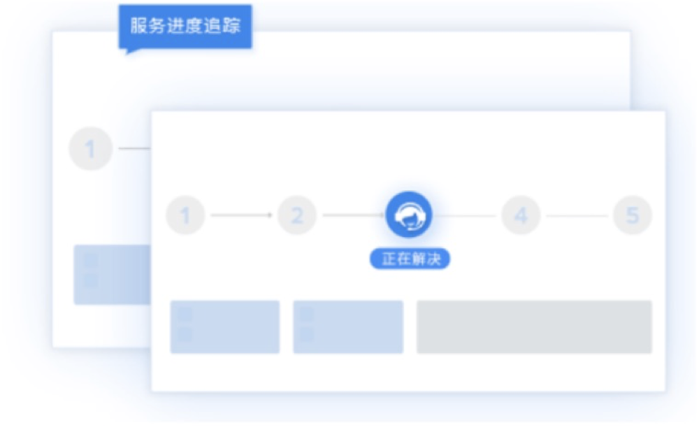

全渠道+全媒体，打造全场景智能获客+服务
全渠道汇聚：电话、桌面网页、移动网页、微信公众号、微信小程序、支付宝小程序、企业微信、微博、邮件、移动App
全媒体服务：语音、视频、文件、图片、文字、表情，帮助客服团队促进销售转化与复购，提升服务体验，升级客户忠诚度

多端多功能呼叫工作台完整展现客户服务数据
支持web与app无缝切换，支持通话组件嵌入任何第三方系统
坐席呼叫工作台，模块化且高度自定义，每个坐席都有自己的专属工作台
转接、三方、咨询、连续高级通话等多种类型功能，方便快速
客户旅程数据全体现，让语音交互的每个节点数据都有丰富的展现

流程自动化完全自定义，让企业协作轻松自然
业务流程通过简单配置字段和触发机制即可完成高度自定义，无需代码
工单系统页面信息根据企业需求进行配置化自定义，打造只属于企业的专有页面
流程每个节点都可以追溯，计时，企业的管理者可以实时看到流程处理情况，满足合规性

实时监控，多维度实时数据统计
后台大屏监控实时查看最新通话数据，方便及时调整安排人员接待统计维度颗粒化，为量化服务管理提供支撑；
提供座席报表、访客报表、技能组报表、会话报表，为数据化管理提供支持和保障